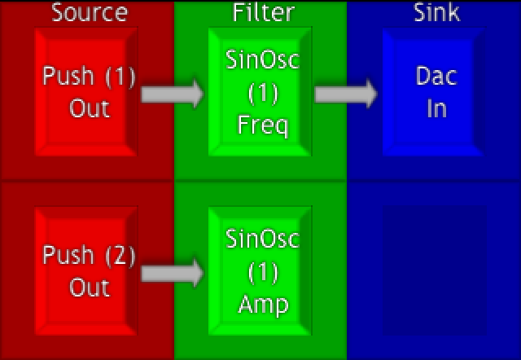

urMus Tutorials
In this tutorial we will show how we can send data into an existing urMus patch that we built in the default interface. The main flowbox to use to send data to is called Push. So if we want to give a script or interface access to our patch, We should use Push flowboxes as the points of interface.
For this first example build a patch in the default urMus interface that looks like this:

Now we write a program that checks if push blocks have been placed and if yes sends random numbers into them.
Simple example how to access Push instances from within lua.
Each flowbox has a global prototype/factory. We can access it via _G["FB..."] where ... is the Flowbox name with correct caps.
Technical Note (skip at will): The default urMus interface will store instances inside the flowbox This is not required behavior but is offered by the interface for convenience here.
So we check if instances exist. If the first instance exists we can Push data into it. If a second instance exists we can Push more data into that.
function PushRandom(self)
local pushflowbox = _G["FBPush"]
if pushflowbox.instances and pushflowbox.instances[1] then
pushflowbox.instances[1]:Push(math.random())
if pushflowbox.instances[2] then
pushflowbox.instances[2]:Push(math.random())
end
end
end
-- Create an invisible region that takes touch inputs.
r = Region()
r:SetWidth(ScreenWidth())
r:SetHeight(ScreenHeight())
r:Handle("OnTouchDown", PushRandom)
r:EnableInput(true)
r.t = r:Texture(255,0,0,255)
r:Show()
Let's build a continuous example. Here we use the touch coordinates to send data to the urMus patch.
FreeAllRegions()
function PushRandom(self,elapsed)
if not pressed then return end
-- InputPosition returns the coordinates of the last touch event
local x,y = InputPosition()
local pushflowbox = _G["FBPush"]
if pushflowbox.instances and pushflowbox.instances[1] then
pushflowbox.instances[1]:Push(x/ScreenWidth())
if pushflowbox.instances[2] then
pushflowbox.instances[2]:Push(y/ScreenHeight())
end
end
end
function Pressed(self)
pressed = true
end
function Released(self)
released = false
end
r = Region()
r:SetWidth(ScreenWidth())
r:SetHeight(ScreenHeight())
r:Handle("OnTouchDown", Pressed)
r:Handle("OnTouchUp", Released)
r:Handle("OnUpdate", PushRandom)
r:EnableInput(true)
Now let's learn how we can get data from an urMus patch.
The Vis flowbox will update a patch whenever the screen is redrawn.
We can get that piece of information from the vis block by calling its
Get() function, which always contains the latest data.
Usually that information is then used to render some visual representation.
Let's go to the urMus default interface an build a new patch:
First we grab a copy of the global version of the Vis flowbox.
local vis = _G["FBVis"]
function Draw(self)
local visout = vis:Get()
if visout > 0 then
self.t:SetBrushColor(255,0,0,255)
else
self.t:SetBrushColor(0,255,0,255)
end
self.t:Clear(255,255,255,255)
local radius = visout*ScreenWidth()/2
self.t:Ellipse(ScreenWidth()/2,ScreenHeight()/2,radius, radius)
PushRandom(self)
end
-- We prepare a texture to draw into
r.t = r:Texture(255,255,255,255)
r.t:SetTexCoord(0,320.0/512.0,480.0/512.0,0.0)
r.t:SetBrushSize(8)
r:Show()
r:Handle("OnUpdate",Draw)
Now we have seen how to both send data from lua to a patch via Push flowboxes and how to receive data from a patch in lua via Vis flowboxes. One can build complete patches using the urMus lua API but this is for another tutorial.